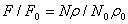
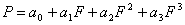
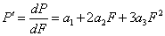
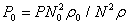
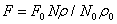
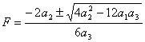
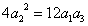
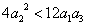

本节介绍如何使用 CONTAM 建模强制流单元的理论。强制流元件包括恒流风机和变流风机。恒流风机包括定体积流量和定质量流量。变流量风扇是根据风扇性能曲线的输入进行建模的，该曲线将压降与通过风扇流量元件的气流相关联。
一个特别简单但有用的气流元件在两个节点之间设置恒定的流量。由于流量是恒定的，因此流量相对于节点压力的偏导数必须为零。恒流元件对雅可比行列式没有贡献，[ A ]，但它确实添加到右侧向量，{ B}.
恒流元件不会在数学上关联相邻节点的压力。为了获得唯一的解决方案，网络中的所有节点都必须链接到恒压节点。违反此限制将导致方程解中的某处被零除。考虑以下简单网络：
|----C1----|----F1----|----C2----|----F2----|----C3----|
P1 P2 P3 P4 P5 P6
其中 P 1 和P 6 是已知压力，F 1 和F 2 是已知的流量。由于流经C 2 由P决定 3 - P4 ，并且没有其他流量与这些压力相关，因此没有足够的方程来确定 P 3and P4 独一无二。这是以下事实的数学表达式：F 是可能的 1 和F 2 被分配不同的流，这产生了物理上不可能的条件。
CONTAM 提供两个恒定流量元素： 一种用于恒定质量流量，一种用于恒定体积流量。
2000 年 ASHRAE HVAC 系统和设备手册第 18 章总结了风扇引起的流动理论 [ 2004年美国采暖及制冷工程师协会 ]。更广泛的治疗在[ 奥斯本 1977 ]。风机性能通常由与总压力相关的性能曲线来表征 上升 给定风扇速度和空气密度下的流量。转换为另一种风扇速度或密度是根据风扇定律完成的。
|
|
(53) |
or
|
 |
(54) |
and

|
(55) |
哪里
Q
= 体积流量，
F
= 质量流量，
P
= 总压力上升，
r
= 密度，
N
= 转速，并且
下标
0
表示风扇额定条件下的值。
如果两种速度下的所有流动条件相似，这些定律是有效的。特别是，它们不适用于尚未形成完全湍流条件的非常低的流量。
在 CONTAM 中，风扇性能曲线由三次多项式表示：
|
 |
(56) |
与
|
 |
(57) |
多项式系数是根据额定条件下的空气密度和风扇速度得出的。因此，当 N and r 不在额定条件下，换算实际压力升 P to P0.
|
 |
(58) |
解 (56) 为 F0 使用迭代或解析解和（57） P’0 。将这些值转换为当前条件。
|
 |
(59) |
and

|
(60) |
流量相对于压降的导数由下式给出

|
(61) |
关于风扇性能曲线的形状，有两个重要因素需要注意。首先，通过以下形式的关系来描述 普(F) 而不是 F(P) 这更适合计算雅可比行列式的流量和偏导数。性能曲线的基本形状不能用简单的多项式很好地表示 P 作为自变量。 CONTAM 使用三次多项式 (56) 的解析解来确定 F 作为一个函数 P.
其次，性能曲线通常包含拐点（其中 P’ = 0) 在特定的风扇压力上升值下产生最多三种不同的流量。这会导致求解流量困难，并且存在以下问题： dF/dP 趋于无穷大。然而，通常不建议风扇在拐点房间运行。因此，只要确保空气分配系统未在该区域运行，就可以使用包含弯曲的性能曲线对风扇进行建模。
您可以根据多项式的系数识别交汇点。解方程（56）为 F 给出：
|
 |
(62) |
|
|
真正的矛盾点有两个 |
|
 |
有一个拐点仍然存在导数问题 |
|
 |
风扇性能曲线是单调的，并且在计算雅可比行列式的导数时表现良好。 |